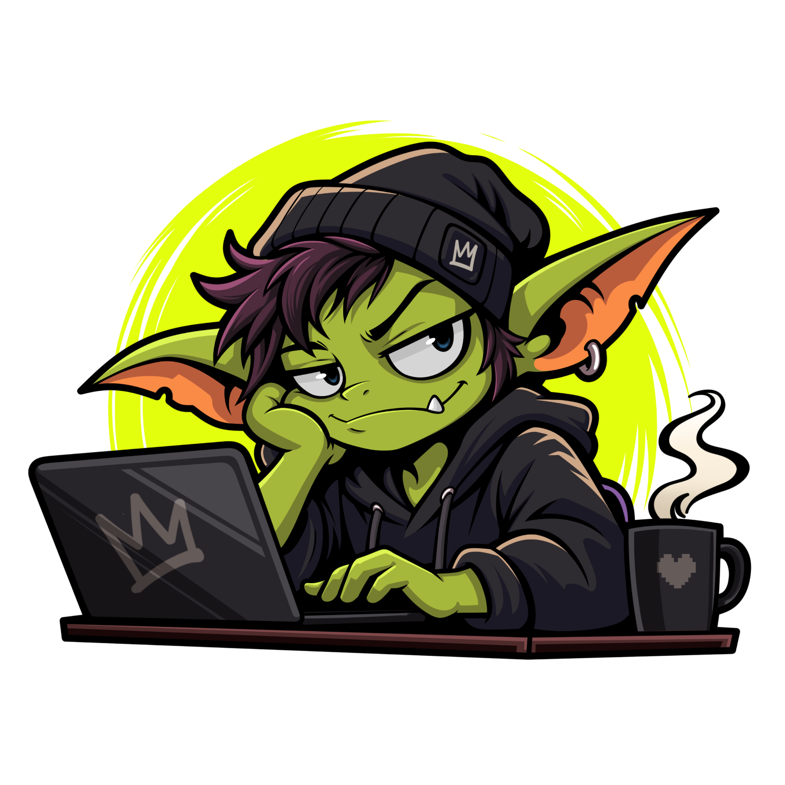

Webサイトを作ります。
心を込めて。
こんにちは！uwu ポルトガルを拠点に活動しているフリーランスのWeb開発者、 NaiveGoblinです。 約4年間Webサイトを制作しており、 Webでものづくりをすることが大好きです。
NaiveGoblinという名前は、ゲーム開発を始めとする さまざまな創作活動でも使っています。 これまでゲームやツールなど、いろいろなものを 試行錯誤しながら作ってきました。 現在はWeb開発を主な仕事としていますが、 そうした経験が今のものづくりの姿勢につながっています。
問題に正面から取り組み、できるだけシンプルで 実用的な解決策を見つけることを大切にしています。 良い仕事、適正な価格、そしてお客様に満足していただける結果。 それが私にとって一番大切なことです。
フリーランス · ポルトガル · Web開発
GHOSTBYTE INDEX.
無料で使えるオープンソースソフトウェアを紹介する 小さなWebサイトです。 クリエイティブ、仕事効率化、開発など、 さまざまな用途のツールを見つけることができます。
どんなことをしているの？
インターネットに長く触れてきたこともあり、 少し工夫すれば、いろいろなものを作ることができます。 仕事として特に得意なのはWeb開発、 なかでもフロントエンド開発と静的Webサイトの制作です。 ランディングページ、スタートアップ向けサイト、 ソフトウェアや個人向けのWebページなどを制作しています。 ご希望に応じてホスティングも対応可能です。
動画、音声、画像編集にも取り組んでいます。 また、GDScriptやPythonを中心としたスクリプト開発も ご依頼に応じて対応しています。 ほかにもできることはいろいろあります！ ぜひ制作実績をご覧ください。 サービスがお役に立ちそうでしたら、 メールやSNSからお気軽にご連絡ください。 ご予算やご希望に合わせて、一緒に最適な方法を考えましょう。
※ お急ぎの場合は、メールでのご連絡が最も早く返信できます。
お話ししましょう。
制作したいものや、実現したいアイデアはありますか？ あるいは、ちょっと挨拶してみたいだけでも大歓迎です！